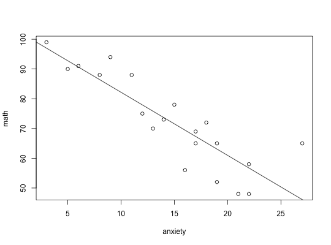

Data used in Exercise 2.96
Anxiety
A data frame with 20 observations on the following two variables.
Kitchens, L. J. (2003) Basic Statistics and Data Analysis. Duxbury
plot(math ~ anxiety, data = Anxiety)with(data = Anxiety, cor(math, anxiety) )#> [1] -0.8641968 #>linmod <- lm(math ~ anxiety, data = Anxiety) abline(linmod)summary(linmod)#> #> Call: #> lm(formula = math ~ anxiety, data = Anxiety) #> #> Residuals: #> Min 1Q Median 3Q Max #> -13.4415 -3.6487 0.8147 3.0895 18.8994 #> #> Coefficients: #> Estimate Std. Error t value Pr(>|t|) #> (Intercept) 103.3919 4.6445 22.261 1.50e-14 *** #> anxiety -2.1219 0.2912 -7.287 9.02e-07 *** #> --- #> Signif. codes: 0 ‘***’ 0.001 ‘**’ 0.01 ‘*’ 0.05 ‘.’ 0.1 ‘ ’ 1 #> #> Residual standard error: 8.06 on 18 degrees of freedom #> Multiple R-squared: 0.7468, Adjusted R-squared: 0.7328 #> F-statistic: 53.1 on 1 and 18 DF, p-value: 9.019e-07 #> #>